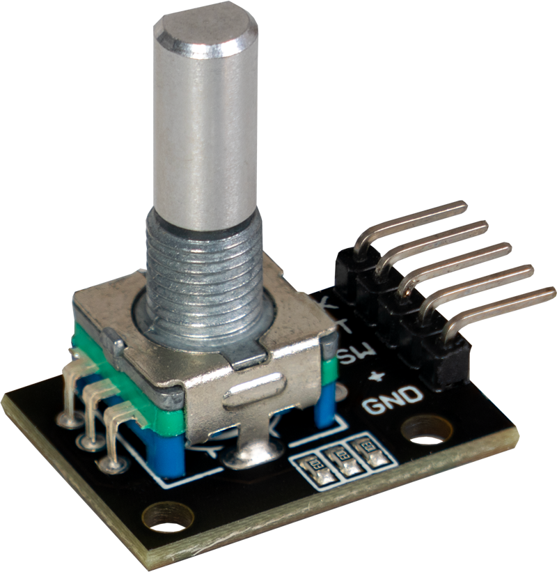
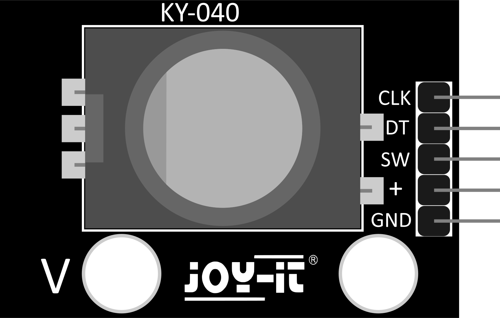
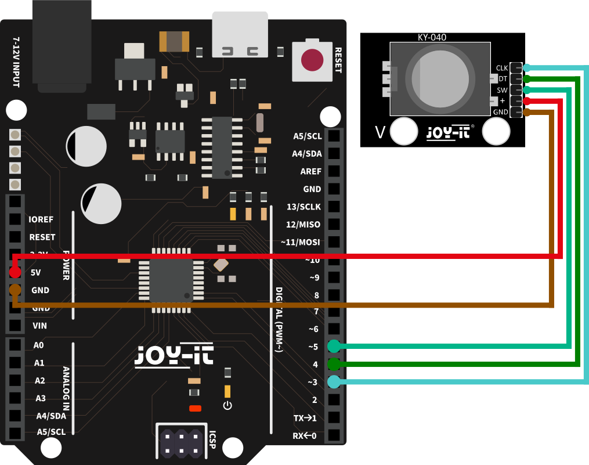

Türchen 18 · Freitag, 18. Dezember 2026
Am Weihnachtsrad drehen
Dreh am Rad! Mit dem Drehgeber lässt sich alles einstellen, von der Lichterkette bis zur Lautstärke der Weihnachtsmusik.
Heute im Säckchen
KY-040 Kodierter Drehschalter (Rotary Encoder)
Wenn der Drehschalter bewegt wird wird die Bewegungsrichtung und die aktuelle Position des Drehschalters kodiert über die Ausgänge ausgegeben.

Der kodierte Drehschalter (Rotary Encoder) gibt die Bewegungsrichtung und die aktuelle Position des Schalters über seine Ausgänge aus, wenn er gedreht wird.
Bei jedem Schritt ändert sich der Zustand der beiden Ausgänge, wodurch die Drehrichtung ermittelt werden kann. Die Drehrichtung wird durch die Reihenfolge der Zustandsänderungen der Ausgänge bestimmt: Je nachdem, welcher Ausgang zuerst seinen Zustand ändert, kann erkannt werden, ob der Schalter im Uhrzeigersinn oder gegen den Uhrzeigersinn gedreht wird.
Dieser Drehschalter ist ideal für Anwendungen, bei denen präzise Positions- und Bewegungsinformationen benötigt werden, wie z.B. in Benutzeroberflächen für elektronische Geräte, Maschinensteuerungen oder in Rotationsmesssystemen. Er ermöglicht eine genaue und zuverlässige Eingabe und ist eine vielseitige Komponente für viele Projekte.
Anschlussbelegung


| Arduino | Sensor |
|---|---|
| 5 V | +V |
| GND | GND |
| Pin 3 | CLK |
| Pin 4 | DT |
| Pin 5 | Knopf |
Weihnachtsidee zum Bauteil
Weihnachtsidee: Der Wunschzettel
Mit dem Drehgeber blätterst du durch eine Liste möglicher Weihnachtswünsche. Ein Druck auf den Knopf schreibt den aktuellen Wunsch auf den Wunschzettel oder streicht ihn wieder, danach erscheint der ganze Zettel im Seriellen Monitor.
Verdrahtung
Wie im Abschnitt zum Bauteil oben: CLK an Pin 3, DT an Pin 4, Knopf an Pin 5, +V an 5V, GND an GND.
Ablauf
Die Drehrichtung erkennt der Sketch wie im Artikel. Nach dem letzten Wunsch geht es wieder mit dem ersten weiter. Eigene Wünsche trägst du in der Liste WUENSCHE ein.
Deine Knobelaufgabe
Im Sketch fehlt der Inhalt der loop()-Funktion. Die Kommentare darin verraten dir, was passieren soll – programmiere es selbst! Die Auflösung findest du morgen ganz unten auf der Seite von Türchen 19.
// Türchen 18: Der Wunschzettel
// Verdrahtung wie im Artikel KY-040 (CLK an Pin 3, DT an Pin 4, Knopf an Pin 5)
const char ART[] PROGMEM = R"ART(
____________________
/ Wunschzettel /|
| - ............ | |
| - ............ | |
| - ............ | |
|___________________|/
Tuerchen 18: Der Wunschzettel
)ART";
const int pin_clk = 3;
const int pin_dt = 4;
const int button_pin = 5; // aktiv LOW
const char* const WUENSCHE[] = {
"Schlitten",
"Lebkuchenherz",
"Neue Sensoren",
"Dicke Wollsocken",
"Ein Lötkolben",
"Schnee bis zum Fensterbrett",
"Ein Tag ohne Hausaufgaben",
};
const int ANZAHL = sizeof(WUENSCHE) / sizeof(WUENSCHE[0]);
bool gewaehlt[ANZAHL];
int position = 0;
int pin_clk_last;
bool knopfVorher = false;
void zeigeAuswahl() {
Serial.print("> ");
Serial.print(WUENSCHE[position]);
Serial.println(gewaehlt[position] ? " [steht schon drauf]" : "");
}
void zeigeZettel() {
Serial.println("Mein Wunschzettel:");
for (int i = 0; i < ANZAHL; i++) {
if (gewaehlt[i]) {
Serial.print(" - ");
Serial.println(WUENSCHE[i]);
}
}
}
void setup() {
pinMode(pin_clk, INPUT);
pinMode(pin_dt, INPUT);
pinMode(button_pin, INPUT);
digitalWrite(pin_clk, true); // interne Pull-ups wie im Artikel
digitalWrite(pin_dt, true);
digitalWrite(button_pin, true);
pin_clk_last = digitalRead(pin_clk);
Serial.begin(9600);
Serial.println((const __FlashStringHelper*)ART);
Serial.println("Drehen zum Blättern, Drücken zum Aufschreiben oder Streichen.");
zeigeAuswahl();
}
void loop() {
// Drehen blättert durch die WUENSCHE (Drehrichtung wie im Artikel; pro Raststufe nur
// eine Flanke zählen). Ein Knopfdruck schreibt den Wunsch auf den Zettel oder streicht ihn.
}Das Grundlagen-Beispiel
KY-040 Kodierter Drehschalter (Rotary Encoder)
Code-Beispiel
Das Beispielprogramm prüft auf die Änderung der Pin-Zustände und ermittelt die Drehrichtung, sobald eine Drehung erkannt wurde. Nachdem die Richtung festgestellt wurde, werden die Schritte von der Startposition an gezählt und ausgegeben. Ein Drücken des Knopfes setzt dabei die Zählung zurück.
Um das folgende Codebeispiel auf deinen Arduino zu laden, empfehlen wir die Verwendung der Arduino IDE. In der IDE kannst du den passenden Port und das richtige Board für dein Gerät auswählen.
Kopiere den unten stehenden Code in deine IDE. Um den Code auf deinen Arduino hochzuladen, klicke einfach auf den Upload-Button.
// Initialisierung benötigter Variablen
int counter = 0;
boolean direction;
int pin_clk_last;
int pin_clk_current;
// Definition der Eingangs-Pins
int pin_clk = 3;
int pin_dt = 4;
int button_pin = 5;
void setup() {
// Eingangs-Pins werden initialisiert...
pinMode(pin_clk,INPUT);
pinMode(pin_dt,INPUT);
pinMode(button_pin,INPUT);
// ...und deren Pull-Up Widerstände aktiviert
digitalWrite(pin_clk, true);
digitalWrite(pin_dt, true);
digitalWrite(button_pin, true);
// Initiales Auslesen des Pin_CLK
pin_clk_last = digitalRead(pin_clk);
Serial.begin (9600);
Serial.println("KY-040 Drehschaltertest");
}
// Das Programm überprüft, falls eine Änderung der Pin-Zustände sich ereignet hat, welcher der beiden
// Pins sich zuerst geändert hatte, was auf die Drehrichtung schließen lässt.
// Diese Information erhält man, in dem man einen der beiden Pin-Werte aus einem vorherigen
// Durchlauf mit dem Wert des aktuellen Durchlaufs vergleicht.
// Nachdem die Richtung festgestellt wurde, werden die Schritte von der Startposition an gezählt und ausgegeben.
// Ein Drücken auf den Knopf des Drehgebers resettet die aktuelle Position.
void loop() {
// Auslesen des aktuellen Statuses
pin_clk_current = digitalRead(pin_clk);
// Überprüfung auf Änderung
if (pin_clk_current != pin_clk_last) {
if (digitalRead(pin_dt) != pin_clk_current) {
// Pin_CLK hat sich zuerst verändert
counter ++;
direction = true;
}
else {
// Andernfalls hat sich Pin_DT zuerst verändert
direction = false;
counter--;
}
delay(300);
Serial.println("Drehung erkannt");
Serial.print("Drehrichtung: ");
if (direction) Serial.println ("Im Uhrzeigersinn");
else Serial.println("Gegen den Uhrzeigersinn");
Serial.print("Aktuelle Position: ");
Serial.println(counter);
Serial.println("------------------------------");
}
// Vorbereitung für den nächsten Druchlauf:
// Der Wert des aktuellen Durchlaufs ist beim nächsten Druchlauf der vorherige Wert
pin_clk_last = pin_clk_current;
// Reset-Funktion um aktuelle Position zu speichern
if (!digitalRead(button_pin) && counter!=0) {
counter = 0;
Serial.println("Position resettet");
}
}Lösung für Tag 17 anzeigen
// Auflösung zu Türchen 17: Das geheime Geschenkversteck
// Verdrahtung wie im Artikel KY-025 (A0 analog, Pin 3 digital)
const char ART[] PROGMEM = R"ART(
/\
/ \
/ \
/______\
| | _\/_
|__| |_||_|
Tuerchen 17: Das geheime Geschenkversteck
)ART";
const int analog_input = A0; // KY-025 analoger Messwert
const int digital_input = 3; // KY-025, HIGH = Magnet erkannt
const unsigned long HALTEZEIT = 2000; // so lange muss der Zauberschlüssel anliegen
const int BREITE = 20;
unsigned long magnetSeit = 0;
bool magnetVorher = false;
bool offen = false;
void setup() {
pinMode(analog_input, INPUT);
pinMode(digital_input, INPUT);
Serial.begin(9600);
Serial.println((const __FlashStringHelper*)ART);
Serial.println("Das Versteck ist verschlossen. Halte den Zauberschlüssel (Magnet) 2 s an den Sensor.");
}
void loop() {
bool magnet = digitalRead(digital_input) == HIGH;
float spannung = analogRead(analog_input) * (5.0 / 1023.0);
if (magnet && !magnetVorher) {
magnetSeit = millis();
}
if (magnet && !offen && millis() - magnetSeit >= HALTEZEIT) {
offen = true;
Serial.println("Klick! Das Geschenkversteck ist offen. Psst, nichts verraten!");
}
if (!magnet && magnetVorher && offen) {
offen = false;
Serial.println("Versteck wieder verschlossen.");
}
magnetVorher = magnet;
// Solange der Magnet anliegt, zeigt ein Balken, wie weit das Aufschließen ist
if (magnet && !offen) {
int balken = constrain(map(millis() - magnetSeit, 0, HALTEZEIT, 0, BREITE), 0, BREITE);
Serial.print("Aufschließen [");
for (int i = 0; i < BREITE; i++) {
Serial.print(i < balken ? '=' : ' ');
}
Serial.print("] Analogwert ");
Serial.print(spannung, 2);
Serial.println(" V");
}
delay(200);
}